Experiment No.7 Reaction kinetic studies in a batch reactor Background and Theory
 The advantages of a batch reactor lies in its versatility. A single vessel can
carry out a sequence of different operations without the need to break containment.
This is particularly useful when processing, toxic or highly potent compounds.
Material balance :
rate of input - rate of output- rate of disappearance = rate of accumulation
The advantages of a batch reactor lies in its versatility. A single vessel can
carry out a sequence of different operations without the need to break containment.
This is particularly useful when processing, toxic or highly potent compounds.
Material balance :
rate of input - rate of output- rate of disappearance = rate of accumulation
.gif) A batch reactor has neither inflow nor outflow of reactants or products while
the reaction is being carried out.
A batch reactor has neither inflow nor outflow of reactants or products while
the reaction is being carried out. .gif) .The resulting general mole balance
on species j is
.The resulting general mole balance
on species j is
.gif) If the reaction mixture is perfectly mixed so that there is no variation in the reate of
reaction throughout the reactor volume, rj
can be taken out of the integral and the
mole balance can
be written as
If the reaction mixture is perfectly mixed so that there is no variation in the reate of
reaction throughout the reactor volume, rj
can be taken out of the integral and the
mole balance can
be written as
.gif) Consider an elementary reaction ...aA + bB --> cC + dD
Rate of disappearance of A=-rA=dNA/dt
Where NA is the number of moles in the reactor at any time
Consatnt volume conditions can be assumed for most of the liquid phase reactions
or for gas phase reactions with no change in number of moles
Then NA=V*CA where CA is the concentration of A in the reactor.
then -rA=dCA/dt
Then for the reaction given above
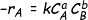
Where .... k= rate constant
a is the order of reaction w.r.t A and b is the order w.r.t B. If the order of the
reaction w.r.t each reactant are equal to the stoichiometric coefficients of these
reactants, then the reaction is elementary.Else it is non elementary.
Consider an elementary reaction ...aA + bB --> cC + dD
Rate of disappearance of A=-rA=dNA/dt
Where NA is the number of moles in the reactor at any time
Consatnt volume conditions can be assumed for most of the liquid phase reactions
or for gas phase reactions with no change in number of moles
Then NA=V*CA where CA is the concentration of A in the reactor.
then -rA=dCA/dt
Then for the reaction given above
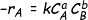
Where .... k= rate constant
a is the order of reaction w.r.t A and b is the order w.r.t B. If the order of the
reaction w.r.t each reactant are equal to the stoichiometric coefficients of these
reactants, then the reaction is elementary.Else it is non elementary.
 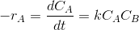
where k is the rate constant.
In terms of conversion and using the
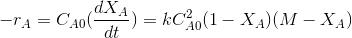
Where M=CBo/CAo
and XA is the conversion of A.
M is the initial ratio of concentrations of B (C Bo)to A(CAo) in the reactor.
After breakdown into partial fractions,integration and rearrangement, the final
result is
Plot
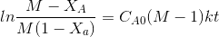
Where ,t= time , M = CBo/CAo, XA is conversition of A at given time
The above equation is valid for M>1.
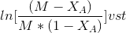
If the data points fits well into a straight line then the assumption of second order
kinetics is true. The rate constant may be calculated from the slope of the line
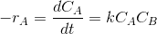
where k is the rate constant.
In terms of conversion and using the
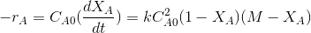
Where M=CBo/CAo
and XA is the conversion of A.
M is the initial ratio of concentrations of B (C Bo)to A(CAo) in the reactor.
After breakdown into partial fractions,integration and rearrangement, the final
result is
Plot
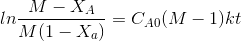
Where ,t= time , M = CBo/CAo, XA is conversition of A at given time
The above equation is valid for M>1.
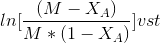
If the data points fits well into a straight line then the assumption of second order
kinetics is true. The rate constant may be calculated from the slope of the line
 .
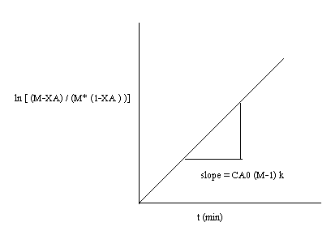
If M=1 then,
The rate equation may be approximated as 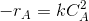
Then the integrated form of the rate equation is 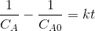
Then plot 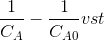
If the rate equation assumed is right, then the plot fits well into a straight line with
slope=k.
b) Differetial method of analysis.
.
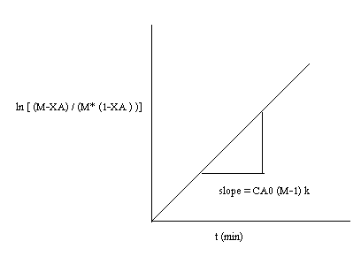
If M=1 then,
The rate equation may be approximated as 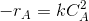
Then the integrated form of the rate equation is 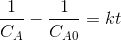
Then plot 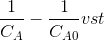
If the rate equation assumed is right, then the plot fits well into a straight line with
slope=k.
b) Differetial method of analysis.
- Hypothesize a rate equation. Let this be 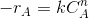. where n is the assumed order.
- Obtain concentration(CA) vs. time data from the batch experiments. Draw CA vs. time. Draw tangents at various points . Find the slopes.these slopes are dCA/dt are the rates of reaction(-rA) at these concentrations.
- Taking logs on both sides of the rate equation will give ln(-rA)=lnk+n.
- Plot of ln(-rA) vs ln(-CA) will give a straight line with slope n (order) if the assumed form of rate equation is correct.k may be obtained from the intercept.
ln(-CA)
 Where k is the rate constant.k0 is the frequency factor. E is the activation energy, R
is the gas constant ,T is the absolute temperature.
Where k is the rate constant.k0 is the frequency factor. E is the activation energy, R
is the gas constant ,T is the absolute temperature.

:
Experiment No: 7
Batch reactor
Proceed to calculations as explained in Section A.
Section A
Observations and Calculations
A -> ethyl acetate
B -> NaOH
Concentration of NaOH in the stock solution= gmol/L
Concentration of ethyl acetate in the stock solution=gmol/L
VA +VB = VT
.. (1)
VT is the total reactor volume
M = (CBS*VB)/(CAS*VA) = moles of B/ moles of A
VB/VA =
..
.(2)
From Eq (1) and (2) ,
VA =......mL , VB=......mL
Where
VA and VB are the the volumes of ethyl acetate and NaOH stock
to be added to the reactor.
Cas and Cbs are the concentrations of stock solutions of A and B.
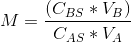 = moles of B/ moles of A
Initial concentration of A in the reaction mixture,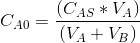=.....gmol/L
Initial concentration of B in the reaction mixture 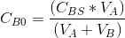=.....gmol/L
CAS and CBS are the concentrations of stock solutions of A and B.
Temperature compensation for conductivity meter
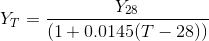
Where ,
YT =conductivity meter reading at any temperature T in mS/cm
Y28 = conductivity meter reading at a temperature of 280c in mS/cm
Obtain Y28 corresponding to measured conductivity meter reading ( YT) using the
equation above.
Conductivity meter is calibrated for concentrations of NaOH in the reaction mixture at a
temperature of 280.
Obtain the Concentration of NaOH at 280 using the calibration equation given below
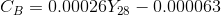
Where,
CB= Concentration of NaOH at time t
Y28= Conductivity meter reading for solution at time t, corrected for 280c
Concentration of ethyl acetate in the reaction mixture,
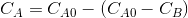=gm
ol/L
Conversion of EA,
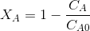 =
Since the reaction is elementary, the reaction rate is given by.
 where k is the rate constant.
In terms of conversion and for M>1,
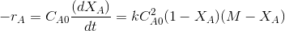
Where
M=CBo/CAo and XA is the conversion of A.
After breakdown into partial fractions, integration and rearrangement, the final result is
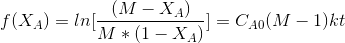
Where
t= time ,M=CBo/CAo and XA,XA is conversition of A at given time
The above equation is valid for M>1.
plot
The rate constant may be calculated from the slope of the line =.
If M=1,then
The rate equation may be approximated as
Then the integrated form of the rate equation is
then the plot f(Ca)=
The plot will yield a straight line with slope=k.
or plot XA/1-XAthe slope of the line is kCA0. Obtain k
Rate constant =........ (litre / gmol)min-1
where k is the rate constant.
In terms of conversion and for M>1,
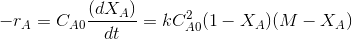
Where
M=CBo/CAo and XA is the conversion of A.
After breakdown into partial fractions, integration and rearrangement, the final result is
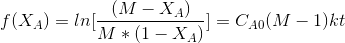
Where
t= time ,M=CBo/CAo and XA,XA is conversition of A at given time
The above equation is valid for M>1.
plot
The rate constant may be calculated from the slope of the line =.
If M=1,then
The rate equation may be approximated as
Then the integrated form of the rate equation is
then the plot f(Ca)=
The plot will yield a straight line with slope=k.
or plot XA/1-XAthe slope of the line is kCA0. Obtain k
Rate constant =........ (litre / gmol)min-1
 Obtain the rate constant at three or more different temperatures.
Obtain the rate constant at three or more different temperatures.
From Arrhenius Equation,
TemperatureT in 0 k
Rate constant kin (L/gmol)min-1
Plot lnk vs 1/T
Determine the activation energy (E) and the frequency factor (ko) from the slope and
intercept of the above plot.
Intercept= lnk0
Slope=-E/R
R is the gas constantActivation energy= E=J/mol
Frequency factor , k0=min-1(litre/gmol)
Activation energy= E= J/mol


Download (matlab files )

1. The thermal decomposition of hydrogen iodide to hydrogen and iodine is conducted in a batchreactor. The following data are given
T, 0C
508
427
393
356
283
k, cm3/mol/s 0.1059
0.00310
0.000588
80.9 x 10 -6
0.942 x 10 -6
Show that the temperature dependency of rate equation follows Arrhenius equation. Find the activation
energy and frequency factor.
2. The following data were obtained on the reaction 2 A -> B in a batch reactor
Time, s
0
5
10
15
20
[A], mol L-1
0.100
0.0141
0.0078
0.0053
0.004
Using a suitable plot, show that the reaction is second order. Find the rate constant.

Chemical Reaction Engineering (3rd Edition), Octave Levenspiel, 1999, John Wiley & Sons
Elements of Chemical Reaction Engineering (4th Edition), H. Scott Fogler, 2005, Prentice Hall
Chemical Reactor Analysis and Design (2nd Edition), Gilbert F. Froment and Kenneth B. Bischoff, 1990, John Wiley & Sons
Fundamentals of Chemical Reaction Engineering (1st Edition), Mark E. Davis and Robert J. Davis, 2003, The McGraw-Hill Companies, Inc.
MIT Open Courseware Lecture notes in Chemical and biological Reaction Engineering. http://ocw.mit.edu/courses/chemical-engineering/10-37-chemical-and-biological-reaction-engineering-spring-2007/lecture-notes/lec09_03072007_w.pdf